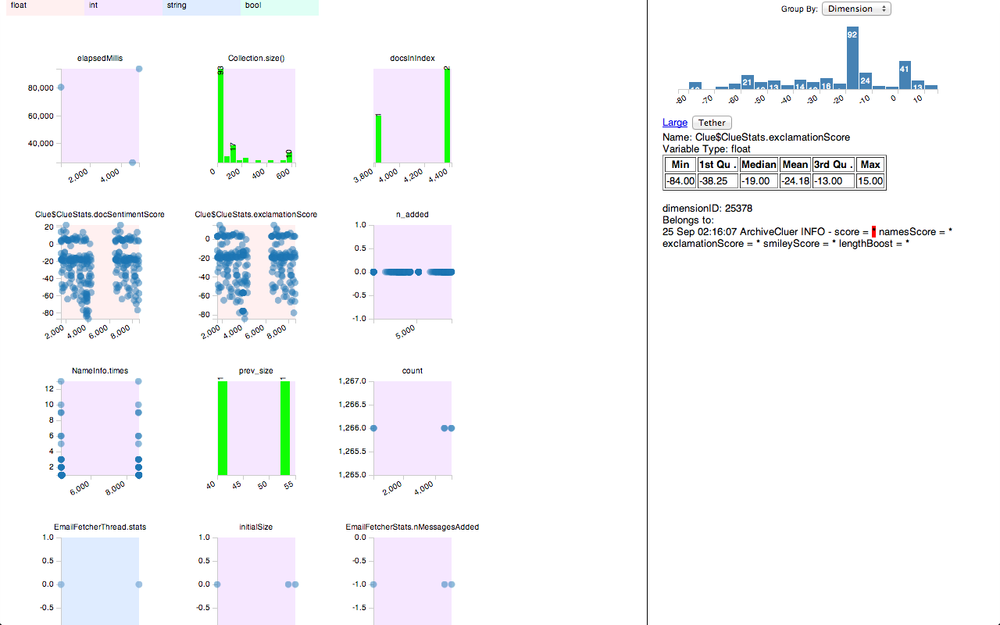
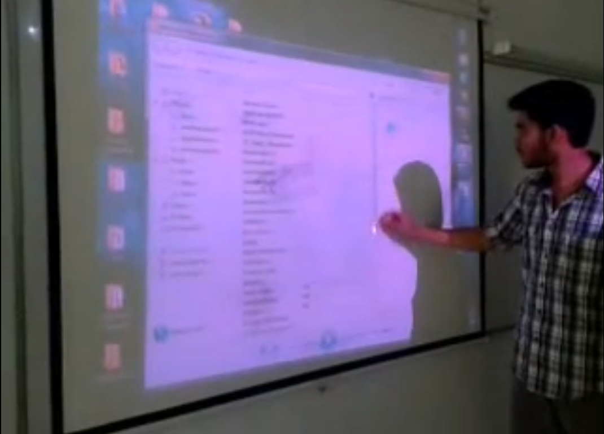
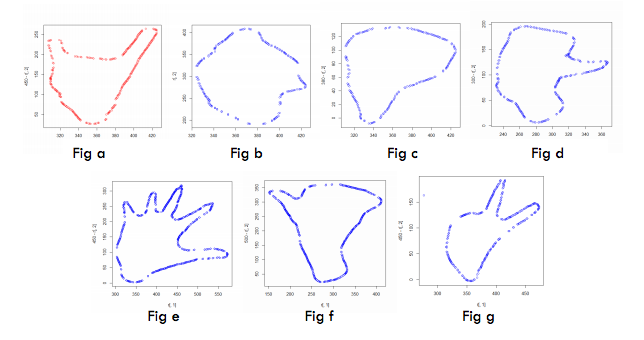
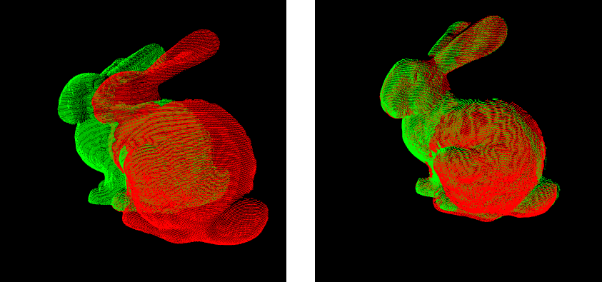
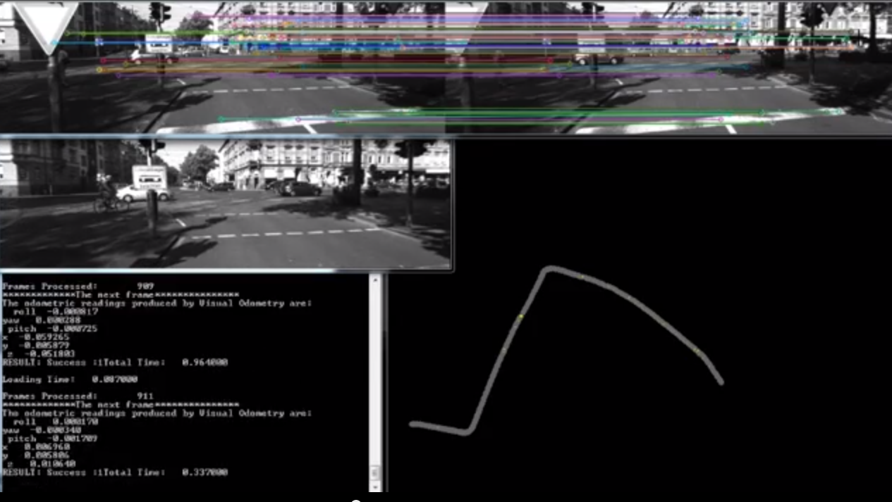
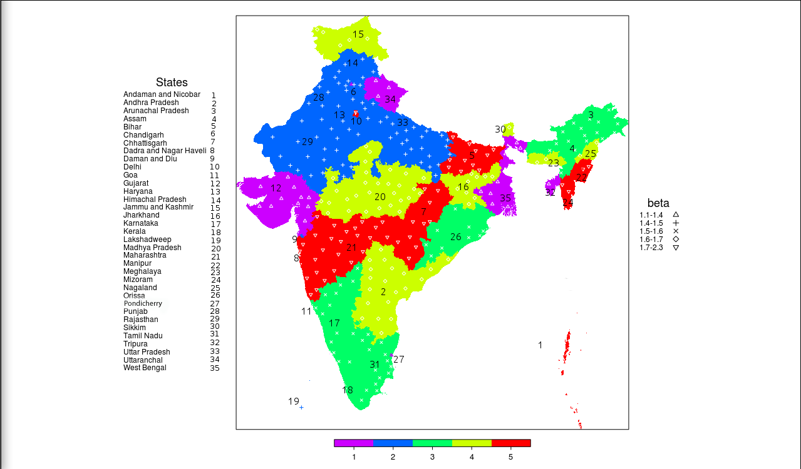

|  |
Seaview
Guide: Dr. Sudheendra Hangal. Seaview is a log file visualization software. The objective of the software is to aid the programmer in debugging, by aiding the visualization of log files. The java byte code shall be instrumented with Unifi to infer unites and dimensions of various variables across class files. Instrumentation step also replaces the log statements that dump also the identity of the variable along with log. |
|  |
Touch Screen Projector
Guide: Dr. Bharat Singh Rajpurohit, Dr. Suman Kalyan Pal. A project taken up for the design practicum course is a project on computer-human interaction where a person can interact with the computing device through a characteristic color emitting pen and a projector to project the screen of the computing device on to any surface. Once projected, the surface can be used as Touch Screen; all this was done at a cost as low as 100 IndianRs. This project also bagged first prize in open-house of the same course. |
|  |
Gesture Recognition
Guide: Prof. Hema Murthy Gesture recognition from webcam images with SVM. 5 gestures with least confusion and highest accuracy were recognised and isolated. This involved frames procurement -> skin color detection -> guassian error denoising -> convex hull detection(for data compression) -> K Means clustering -> SVM(support vector machines). Accuracy close to 90% was observed with the least confusion set of gestures. |
|  |
3D Registration
Guide: Navneet Subramanian. As a part of my intern at Medical Imaging lab@GE research Bangalore, I implemented Fast Point Feature histogram for 3d registration. My stint at Ge also includes work of removing defects from Ultra Sound images which involves plane detection thresholding, and vessel segmentation(Frangi vessel detection). |
|  |
Visual Odometry
Guide: Dr.Anil Kumar Sao This project was a part of AUAV[Autonomous Unmanned Aerial Vehicle] project. Visual Odometry is a problem of pose estimation of the vehicle from its video-feed. This project was an application of "Andrew Howard, Real time visual odometry for Autonomous Ground vehicles." |
|  |
Spatial and Temporal tracking of tuberculosis in India
Guide: Dr. Sarita Azad, Dr. Ankit Bansal, Dr. Pietro Lio This project is aimed at modeling the Endemic state of Tuberculosis and to predict the incidence of TB in the forthcoming year at various locations in the country. |